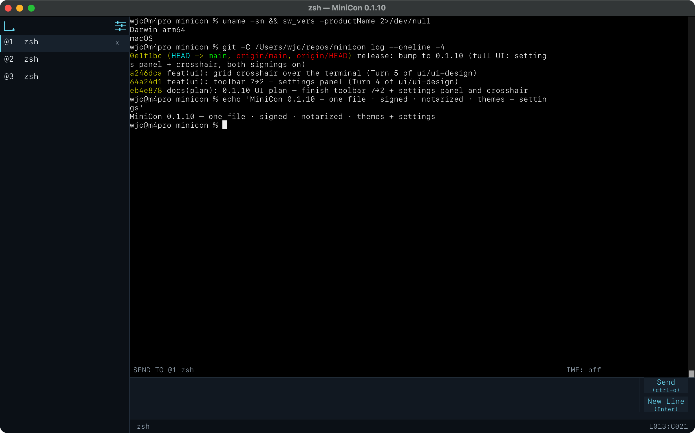

Standalone terminal · Windows · v0.1.0
A terminal that is one file.
Copy it. Run it. That is the install.
MiniCon is a single Windows executable under 1 MiB. No installer, no runtime, no Visual C++ redistributable — every library it loads is part of Windows. It opens a real PTY, renders a real terminal, and a script can drive and read every part of it.
MIT OR Apache-2.0 · nothing to uninstall · no background service
What MiniCon is
The whole product is the executable. Nothing is installed, nothing runs in the background, and deleting the file removes it completely.
A release gate fails the build above 1 MiB. Size is a budget the tests enforce, not an aspiration in a README.
Real PTY, real VT parsing, tab tree, IME, mouse, scrollback, and a control surface a script can drive.
This is the whole application.
A tab column, a terminal, and an input line. No panels to arrange, no workspace to configure, no account to create.

It runs where modern terminals cannot.
Windows gained a pseudoconsole in build 17763 (version 1809). Terminals built on it stop there — and Microsoft's ConPTY redistributable does not lower the floor, because it supports the same version as the in-box API. MiniCon runs on Windows Server 2016.
A missing API is not a dead program
The pseudoconsole entry points are looked up at run time. Imported statically, one missing symbol stops the program before it starts — a dialog naming something you cannot act on.
It brings its own console agent
Without ConPTY, MiniCon re-executes itself to host your shell in a hidden console and reads the screen buffer. That agent is MiniCon — no second binary to ship.
It asks the system, not a table
The backend is chosen by whether the exports exist. A version-number comparison would need revisiting the moment anything changed; the version is only used for the message you read.
It tells you what it got
`--status` reports the backend this machine selected and why, the font face the system actually resolved to with its measured cell width, and where failures are written. It opens no window, so it works where opening a terminal is the thing that does not.
Nothing to install first
The VC runtime is linked in. A test parses the shipped executable's import table and fails if anything outside the Windows-provided set appears, so it cannot quietly regress.
A place to type that is not the output.
Most terminals make you type into the same region a running program is printing into. A long command and a burst of output interleave on screen, and you lose track of what you have actually typed. MiniCon gives input its own area — and once input has its own area, it can do things the output region cannot.
Compose while it scrolls
Write and review a long command while output keeps arriving. Nothing you type is interleaved with anything a program prints, and a screen clear cannot take your line with it.
A sent line survives being sent
Up and Down walk what you sent before, so resending or amending it is not retyping it. Half-typed text is kept when you start browsing and put back exactly if you step past the newest entry.
Named, not numbered
The label names the tab the text is going to. With a tab tree, knowing which terminal is about to receive a command is the difference between confidence and a guess.
A terminal a script can see into.
Sending a keystroke is the easy half. MiniCon's control CLI drives the real UI and reads back what the window is actually showing — text, screenshots, focus, tab state — so automation can wait on a condition instead of guessing with a timer.
# start a session with a control endpoint minicon --control pipe:\\.\pipe\build # run something, then wait for it — no sleeps minicon cli --control pipe:\\.\pipe\build send-text "cargo test\r" minicon cli --control pipe:\\.\pipe\build wait-text --timeout-ms 600000 "test result" # read the result as text, or as a picture minicon cli --control pipe:\\.\pipe\build capture-pane minicon cli --control pipe:\\.\pipe\build screenshot-pane --output run.png
Getting it
Download the executable and run it. There is no installer because there is nothing to install.
# or build it yourself git clone https://github.com/partnernetsoftware/minicon cd minicon cargo build --release # target/release/minicon.exe
Honest scope. MiniCon is a Windows product first: the small-binary, no-runtime and old-Windows work is all Windows work, and that is where it is tested. It builds for Linux and macOS and the terminal core is shared, but those hosts do not carry the same guarantees yet.
Documentation
Written to be checkable. Where a number appears, it came from a measurement.
Running on old Windows
Why other terminals stop at build 17763, what MiniCon does instead, the exact dependency set, and how to diagnose a machine that still refuses to start it.
Driving MiniCon from a script
The full control surface: reading state, waiting on conditions, sending input, managing the tab tree, and running one command instead of a shell.
Source and tests
The behaviour claimed here is pinned by the test suite — including gates for the import table, the size budget, and the CLI's own contract.